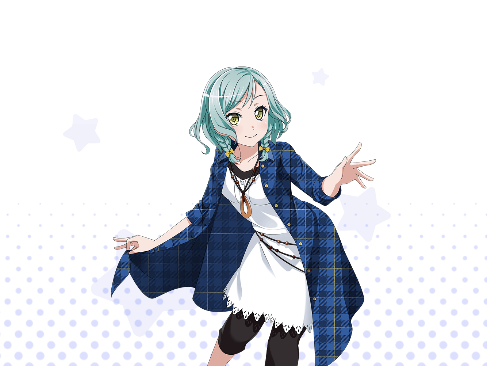

日菜
あっれー？
こんなとこで会うなんて珍しいねー！
日菜
え？ 何してんのかって？
んー、別に？ 暇だからフラフラしてるだけー
日菜
せっかくの休日なんだもん。
家ん中に籠ってたらもったいないしね
日菜
いつも歩いてる道だけじゃなくて、
知らない道とか公園とか……
日菜
そういうのを見つけるのって、
この先に何があるんだろう？ とか思ったりして、
ワクワクするんだよねぇー
日菜
え、{{userName}}さんもそう思うの？
やっぱそうだよねー！
なんかあたし達、気が合うのかも〜？
日菜
あたしってさ、なんか未知っていうのが好きみたいなんだよね
日菜
え？ 道じゃなくて、未知！
日菜
あははっ、もう。面白いなあ
日菜
だから、ライブも好きなんだよね〜
日菜
だって、何が起こるかわかんないじゃん？
日菜
そういうのってすっごいワクワクする！
日菜
あたしは練習しなくてもなーんでもできちゃうからさ、
なんでも退屈に感じちゃうの
日菜
だから、自分の予想がつかないことが起きそうなところに飛び込みたいって思っちゃうんだ
日菜
あっははー、ま、たしかに怖いものしらずなのかもね
ま、それが日菜ちゃんのおもしろいトコなわけよ
日菜
わかった？
日菜
んーっ、じゃ、あたしはまだまだ知らない道を
探して歩いてみようかな
日菜
それじゃ、まったねー☆